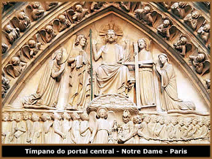
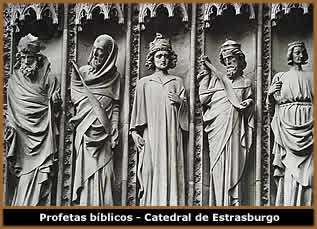

A
escultura gótica surge, numa primeira fase, intimamente
associada à arquitetura das catedrais. No exterior do edifício
são sobretudo as fachadas, principal e do transepto, nomeadamente
os portais, os suportes para a implantação da escultura;
à medida que se vão tornando mais complexas, também
as empenas, rosáceas, tabernáculos dos arcobotantes
e gárgulas das catedrais vão servir de suporte para
a decoração das esculturas. Quanto à estrutura
do portal, ele é constituído pelo tímpano,
arquivoltas, mainel e ombreiras ou jambas, substituídas
por estátuas-coluna. No interior o trabalho é bem
mais reduzido, e é sobretudo a partir do século
XIV que a catedral passa a albergar mobiliário com relevo
em talha (cadeirais do coro), estatuária devocional, altares
e arcas tumulares. No seu conjunto, a escultura gótica
pode ser agrupada em quatro tipologias. Sendo a primeira as estátuas-coluna,
aplicada nas ombreiras do portal conferindo uma dimensão
vertical ao pórtico, mas que progressivamente se vai autonomi-
zando em relação ao seu suporte arquitetônico.
O segundo elemento é o relevo escultórico,
sobretudo no tímpano do portal. O terceiro, considera-se
a escultura de vulto redondo, em especial estatuária
de devoção, resultante da evolução
das estátuas-coluna. O quarto item da tipologia é
a escultura funerária, ou seja, arcas tumulares
e estátuas jacentes.
Os temas mais comuns, sobretudo na fachada (portal),
são os seguintes: Cristo em Majestade, associado
ao Tetramorfo; Juízo Final; Virgem em Majestade,
Vida da Virgem e Nascimento de Cristo - um tema introduzido
por influência da difusão do culto mariano desde
os finais do século XII - Episódios da vida
dos santos patronos da respectiva igreja - associados a estes
temas começa a ser mais comum a existência de relevos
escultóricos e estatuária de caráter profano.
Se a estátua-coluna e o relevo têm uma relação
de dependência com o respectivo suporte arquitetônico,
a partir do século XIV torna-se muito abundante a escultura
de vulto redondo, estatuária de devoção associada
às práticas da piedade individual e destinada a
capelas ou oratórios privados. É sobretudo constituída
por imagens da Virgem (Virgem com o Menino, Senhora do Ó
ou Santas Mães, Pietà), de santos e crucifixos,
e executada em materiais diversos, como a pedra, madeira, marfim,
bronze, ouro e alabastro. Em termos de linguagem plástica,
e no conjunto de toda a produção escultórica,
podem ser definidas três tendências principais: Idealismo
(séculos XII-XIII), com figuras estilizadas e ausência
de expressividade dos respectivos rostos (serenidade inexpressiva);
hieratismo das estátuas-coluna: ausência
de movimento, panejamentos rígidos acentuam a verticalidade,
ausência de proporção anatômica; Naturalismo
(2ª metade do século XIII a meados do XIV), em que
a estatuária ganha vida e movimento, com ancas pronunciadas
e silhuetas "em S" para evidenciar dinamismo, acentua-se
a expressão do rosto e surgem detalhes mais minuciosos
no tratamento de cabelos e barbas, conferindo um caráter
mais humano às personagens divinas representadas; Realismo
(2ª metade do século XIV e durante o século
XV), época do triunfo da curva e contra-curva, ondulação
excessiva, sobretudo no drapeamento, que acentua a expressividade
das estátuas; preocupação absoluta de representação
do real, que conduz à procura da verossimilhança
no retrato; por influência da grande mortandade após
1348 e os progressos nos estudos anatômicos levam mesmo
ao exagero de representar o corpo feito cadáver.
Sobre
a escultura gótica
Apesar
de terem mantido muitos aspectos que caracterizaram a escultura
românica, como, por exemplo, a continuidade de uma relação
de grande cumplicidade com a arquitetura, os artistas dos sécs.
XIII e XIV alargaram o seu repertório temático,
utilizaram um maior número de suportes e receberam da parte
dos enco- mendadores uma atitude mais aberta em relação
ao seu trabalho. Relativamente ao período anterior, registrou-se
uma evolução, sobretudo, ao nível da composição,
da expressividade, da monumentalidade das suas obras e da progres-
siva aproximação ao real. Deste modo, a escultura
gótica estabeleceu uma aproximação gradual
à cultura humanística, assumindo um caráter
mais naturalista na representação do rosto, do corpo
humano ou da natureza, desenvolvendo novas capacidades expressivas
e autonomizando-se em relação à arquitetura.
Tendo conquistado o seu próprio espaço, a escultura
atingiu uma concepção mais plástica, mais
dinâmica e verdadeira. Uma das obras paradigmáticas
desta renovação é a Morte da Virgem,
do tímpano da Catedral de Estrasburgo. Aqui, a dificuldade
de adaptação das figuras ao espaço arquitetônico,
implicando em alguns casos a representação parcial
das figuras, é compensada pela delicadeza com que os Apóstolos
tocam o corpo da Virgem e pela emoção que se manifesta
nos seus rostos. Também a forma como são tratados
os cabelos e as pregas das roupas, evidenciando a anatomia dos
corpos, é inovadora e faz-nos lembrar a arte clássica.
Já a Anunciação e a Visitação
esculpidas nas jambas do pórtico ocidental da Catedral
de Reims libertaram-se da arquitetura para se converterem em esculturas
de vulto redondo, firmemente apoiadas no solo, continuando um
caminho iniciado em Chartres. Privilegiando uma aproximação
ao mundo físico, as pregas da roupa deixam transparecer
as anatomias que cobrem e, especialmente na Visitação,
o escultor parece dominar completamente o modelo clássico.
Talvez a inovação mais significativa
se relacione com a organização do portal do templo:
as ombreiras, ou jambas, são substituídas por estátuas-coluna
que se prolongam nas arquivoltas em torno do tímpano. A
evolução dos temas e da iconografia, inspirada no
Novo Testamento, continua sendo estabelecida por motivações
de ordem religiosa - Cristo em Majestade, Juízo Final
(com os Apóstolos distribuídos pelas ombreiras)
e a Virgem em Majestade -, mas, de um modo geral, as
figuras são humanizadas estabelecendo entre elas uma relação
afetiva. A partir de meados do séc. XII, o santo patrono
da igreja ocupa o tímpano numa mandorla e no centro de
cenas da sua vida, ao qual se juntam todos os santos da diocese
nas ombreiras, em estátuas-coluna. A escultura gótica
caracterizou-se, sobretudo, pelo naturalismo das expressões
e dos detalhes mais minuciosos e por uma representação
mais próxima do real. Para além destas manifestações,
surgem com grande impacto na produção escultórica
as estátuas jacentes e os retratos funerários, o
que se deveu fundamentalmente à proliferação
de capelas privadas para albergar sepulcros de nobres, altos dignitários
eclesiásticos e burgueses.
Texto original
de "História da Cultura e das Artes" - Paulo
Simões Nunes
Extraído
e adaptado de http://galaaz.blogspot.com